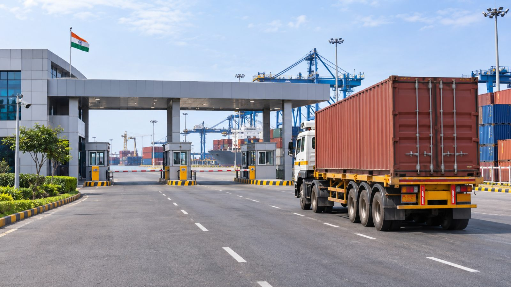

Bonded warehouse coordination
Coordinate with authorized warehouse operators and relevant service providers on storage arrangements.
- Warehouse arrangements and receiving requirements.
- Documentation and stakeholder communication.
08 / BONDED WAREHOUSING
Secure storage solutions with efficient customs and warehouse coordination for eligible imported goods.
BONDED WAREHOUSING COORDINATION
International trade can require businesses to store imported goods before completing customs clearance and applicable duty payment formalities. Bonded warehousing allows eligible goods to be stored in an authorized customs-bonded warehouse under customs control, subject to applicable regulations and procedures.
Sea Asia Shipping Services provides coordination support for bonded cargo movement, warehouse documentation, customs-related formalities, inventory monitoring, cargo handling, and ex-bond clearance requirements. We coordinate with warehouse operators, customs professionals, transporters, and other relevant stakeholders.
Eligible importers may defer applicable import duty until goods are cleared for domestic consumption, subject to customs laws, prescribed conditions, and timelines. Warehousing arrangements and approvals depend on the cargo and applicable requirements.

HOW WE HELP
Coordination support across bonded cargo storage, customs documentation, and release.
Coordinate with authorized warehouse operators and relevant service providers on storage arrangements.
Coordinate eligible cargo movement from a port, CFS, or designated location to a bonded warehouse.
Coordinate applicable documents for bonded warehousing procedures with the relevant customs professionals.
Assist with coordination of formalities associated with duty deferment for eligible importers.
Coordinate with warehouse teams on cargo identification, records, stock movement, and status.
Coordinate unloading, stacking, storage, handling, and movement with warehouse operators.
Coordinate applicable release formalities when goods leave the bonded warehouse.
Coordinate release in multiple lots where permitted under applicable customs procedures.
Coordinate transport from bonded warehouses to designated destinations after release formalities.
Follow up on bonded cargo status, pending requirements, and relevant warehouse timelines.
THE PROCESS
Each step is subject to the applicable customs process, approvals, and warehouse requirements.
Cargo arrives at a designated Indian port or customs facility; shipment and commercial documents are collected.
Coordinate the applicable Bill of Entry and warehousing documents for eligible goods.
Arrange movement to the bonded warehouse with relevant transporters after required permissions.
The warehouse receives, verifies, records, and stores goods under applicable customs supervision.
Follow cargo status, records, applicable timelines, and the importer’s planned release requirements.
Coordinate applicable ex-bond documentation, customs assessment, and duty and tax payment.
Coordinate cargo release and transportation to the designated destination after required formalities.
STORAGE ARRANGEMENTS
The suitable arrangement depends on the importer, cargo, warehouse licence, and applicable permissions.
Licensed facilities that may store goods belonging to multiple importers under applicable customs regulations. They can support businesses that need bonded storage without operating their own licensed facility.
Customs-licensed facilities operated for storage of goods belonging to the licensee, subject to applicable permissions and conditions.
Arrangements for cargo that may require particular storage conditions, handling procedures, security, or operational controls, depending on cargo needs and approvals.
PREPARATION
Requirements vary by goods, warehouse type, procedure, and regulatory conditions.
The actual document list depends on the goods, customs procedure, warehousing provisions, and regulatory approvals. We can help coordinate the relevant checklist with the parties handling your shipment.
Customs requirements: Duty treatment, permitted storage periods, approvals, and clearance procedures depend on current applicable laws and the specific shipment. Please confirm the requirements with your customs professional or relevant authority.
WHY SEA ASIA
We focus on clear communication and organized follow-through with the relevant stakeholders.
Support from initial cargo movement through storage and final release.
Coordination for applicable warehousing and ex-bond documents.
Liaison with authorized warehouse operators and service providers.
Follow-up on applicable formalities for eligible bonded cargo.
Updates on cargo status, records, and release requirements.
Movement coordination between ports, warehouses, and destinations.
COMMON QUESTIONS
Answers to common questions about bonded storage and cargo coordination.
It is the storage of eligible imported goods in an authorized customs-bonded warehouse under customs control, subject to applicable laws and procedures.
Bonded storage can help eligible importers manage inventory and plan release timing. Applicable import duty may be deferred until goods are cleared for domestic consumption, subject to customs provisions.
Bonded goods remain subject to customs control and applicable warehousing procedures. Non-bonded storage is not a customs warehousing arrangement; requirements depend on the facility and cargo.
Eligible importers may defer applicable import duty while goods remain in bond, subject to prescribed conditions, timelines, and regulations. Confirm treatment for your shipment with a customs professional.
It is the applicable customs declaration used to enter eligible imported goods into a customs-bonded warehouse, subject to the relevant procedures.
It is the applicable customs declaration used when warehoused goods are cleared from bond, including for home consumption, subject to customs assessment and payment requirements.
Partial clearance may be possible where permitted under applicable customs procedures. Requirements depend on the goods and approval conditions.
Permitted warehousing periods and any extension conditions depend on applicable law, goods, and circumstances. Check the current requirement for your specific shipment.
Movement may be coordinated where permitted, after applicable documentation and permissions are in place and the warehouse can receive the cargo.
Consequences and available steps depend on the applicable law and circumstances. Importers should track relevant deadlines and consult their customs professional promptly.
Re-export or other permitted disposition may be possible subject to applicable customs requirements, permissions, and documentation.
We can discuss coordination requirements for industrial machinery, raw materials, commercial goods, and other eligible cargo. Storage suitability and approvals depend on the goods and facility.
We provide coordination support for applicable ex-bond documentation, release follow-ups, and transportation arrangements with relevant stakeholders.
LET’S SIMPLIFY YOUR REQUIREMENTS
Share your cargo details, storage needs, and expected release timeline. Our team can help coordinate the documentation, warehouse communication, and cargo movement steps.